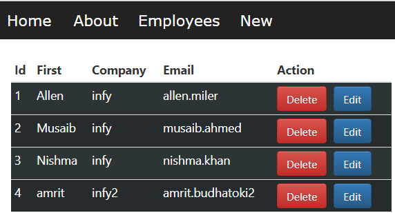

PERSONAL PROJECTS -
Github
React Redux Example -
An example of a dynamic website using React and Redux. Includes routing and async requests
to a sample backend.
Displays backend information in an employee table which automatically re-renders as items
are added, edited,
or deleted. Also includes a counter that gets passed through components via redux.

PROFESSIONAL EXPERIENCE
Software Developer Engineer, Performance Testing | Sallie Mae Bank | October 2018 - Present
Use Visual Studio Enterprise to create load test and automated web test scripts in C# for the
purposeof performance testing multiple applications within the company.
Manage CI/CD Azure DevOps pipeline to set up and keep the performance testing environmentupdated
with the latest deployments of microservices.
Utilize Dynatrace to monitor the health and performance of AWS servers allocated to ourenvironment,
and the services hosted there.
Execute planned performance test interactions which includes run time monitoring, tracking
andtroubleshooting issues and statistics capturing.
Perform post performance test follow-up tasks which include statistics review, issue and
bugresearch.
Trainings:
Trained in a classroom setting with an instructor covering fundamentals in testing life cycle,
SQLServer, C#, and automation testing using Selenium WebDriver with NUnit
Attend weekly trainings on automation testing using Specflow with Gherkin.
Associate (Full Stack Developer) | INFOSYS LTD. | September 2017-October 2018
Projects:
Client, Current – Work involves using React JS to create web services, React Native for Android
development,
and XCode/Swift for development of iOS applications to satisfy client needs.
Internal – Created a typeahead reusable component using Angular 5 to dynamically show search
suggestions
to the user at every key input. Data fetched from backend or static JSON. Accessibility concerns
were addressed using the Aria framework and support was added for internationalization using the
ngx-translate library.
Internal – Used full MEAN stack (MySQL, Express, Angular 4, Node JS) to create a boat rental
service
website to satisfy end of training requirements. Website dynamically fetches data from the backend
to display onto the front-end using RESTful web services.
Trainings:
Completed a two-month long training program covering programming fundamentals in Python,
JavaScript,
HTML, CSS, Bootstrap, Angular, React, and Node JS backend systems.
Participated in separate courses on XCode/Swift iOS development and React JS.
Research and Technical Assistant | University of California, Santa Cruz Physics Dpt., Frank
Bridges |
April 2014- July 2016
Wrote senior thesis to satisfy graduation requirements of UC Santa Cruz’s Physics Dpt. Thesis on
X-Ray absorption
spectroscopy and thermal characteristics of thermoelectric compound Ce0.9CoFe3Sb12.
Utilize the XAFS technique to characterize properties of high interest compounds such as
thermoelectric skutterudites
and low temperature super conductors.
Gather X-Ray absorption data at beam line experiments at the Stanford Synchrotron (SSRL) near SLAC,
the Stanford
Linear Accelerator.
Manage experimental equipment at SSRL, including cooling samples to 5 K with liquid helium and
controlling
experimental voltages and voltage gains by detuning.
Perform IT maintenance on a dedicated Unix server.
Plot and perform statistical data analysis on x-ray absorption data stored on a Unix server using
PGPlot
and RSFit.